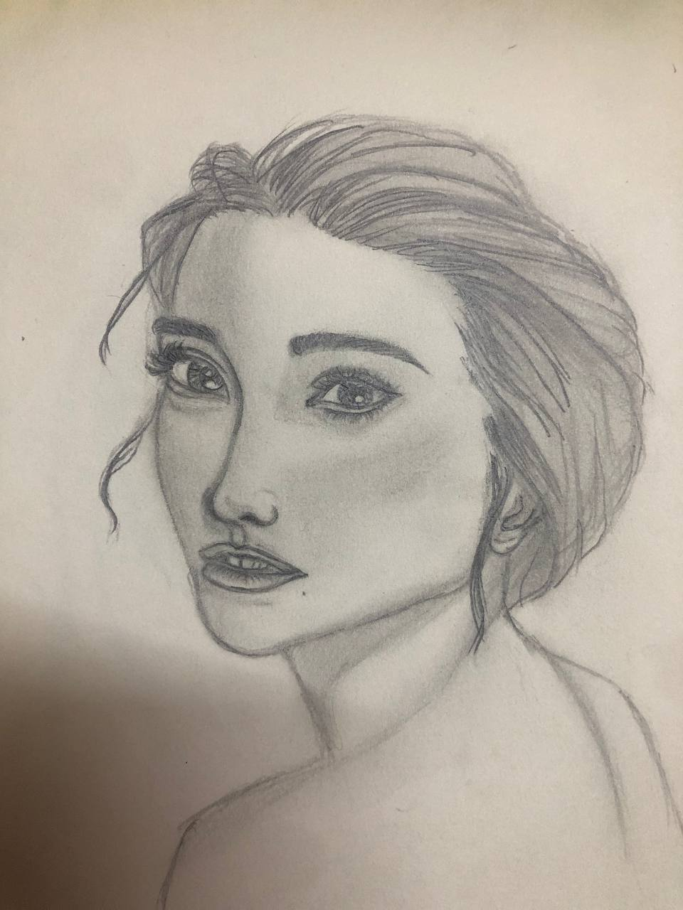

Personal Information
| Name | Amirah Emri |  |
| Date of birth | 11 June 2003 | |
| Religion | Islam | |
| Race | Malay | |
| Address | Street | A-10-3, Pangsapuri Berembang Indah |
| Town | Taman Bahagia | |
| District | Ampang | |
| State | Selangor | |
| Contact | Mobile Phone | 011-33124801 |
| Social Media | @_nrlamirahhh | |
| Website | www.amirah.com | |
| Course and Institution | Bachelor of Science Computer (Software Engineering) in UTHM | |
| Programming skills | HTML | |
| Personal Interest | Drawing | |
| Future plan in 2025 | Buy New Guitar | |
My Hobbies
One of my greatest passions is drawing portraits, as it allows me to capture the essence and personality of the subject on paper. There’s something incredibly rewarding about translating the unique features and expressions of a person into art. I find immense joy in observing the subtleties of their expressions and the way light interacts with their facial features.
Campus Life
During my time at UTHM, I actively participated in a variety of events and programs, including extracurricular activities like the Reserve Officer Training Unit (ROTU). Being part of ROTU was an enriching experience that pushed me beyond my comfort zone. Through this program, I had the opportunity to engage in challenging outdoor activities, such as hiking, shooting practice, and survival training. Along the way, I made lasting friendships with fellow cadets who share a passion for adventure and personal growth. Together, we embraced every challenge, and these experiences have become some of my most treasured memories at UTHM.